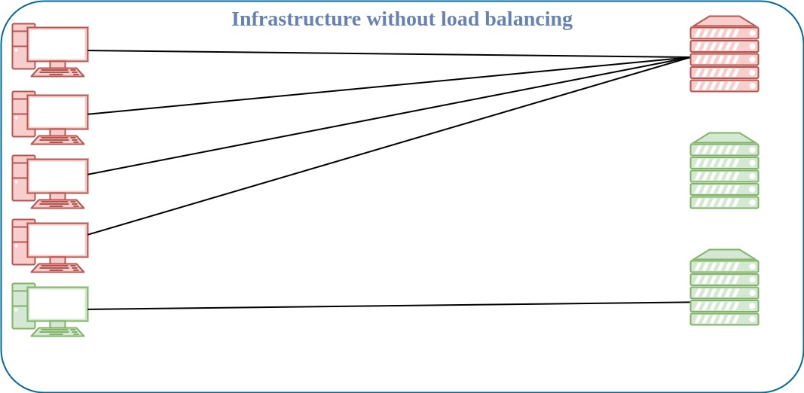
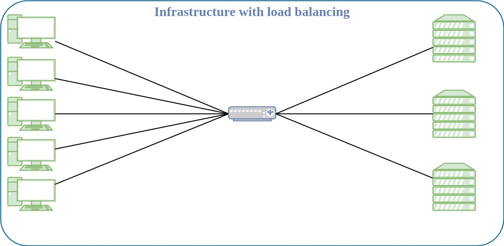
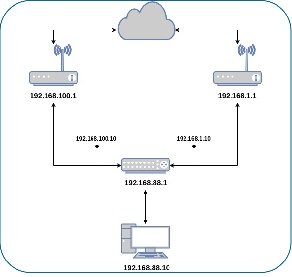

Today, I’ll demonstrate how to set up a failover-capable load balancer using the PCC (Per Connection Classifier) method, a highly flexible load balancing solution that is straightforward to configure. Since there are a lot of misconceptions about load balancing and the speeds you can achieve, let me clarify that it is not possible to split a network connection in half, route each half through different ISPs, and expect them to magically reunite. With PCC load balancing, we distribute connections, not bandwidth or segments of connections, among different ISPs. In summary, ‘connection 1’ will utilize ISP 1, ‘connection 2’ will leverage ISP 2, and ‘connection 3’ will be routed through ISP 1.
What is load balancing?
Load balancing is the method of efficiently distributing incoming network traffic across a pool of resources.


What is failover?
Failover enables you to set a second upstream connection to your device which will serve as a “backup”. If your primary upstream service goes down, you will begin utilizing your secondary upstream connection.
What is PCC?
PCC (Per connection classifier) will allow you to divide traffic into equal streams with the ability to keep packets with a specific set of options in one particular stream. PCC takes selected fields from the IP header, and with the help of a hashing algorithm, converts the selected fields into a 32-bit value. This value then is divided by a specified Denominator and the remainder then is compared to a specified Remainder, if equal then the packet will be captured. You can choose from src-address, dst-address, src-port, dst-port from the header to use in this operation. For example:
Number of upstream (ISP) interfaces: 2
Posible results: 0 and 1
| Hash n° | Hash Value | Operation | Upstream Interface |
|---|---|---|---|
| Hash 1 | 12321 | 12321/2 = 1 | WAN 2 |
| Hash 2 | 6400 | 6400/2 = 0 | WAN 1 |
| Hash 3 | 1321 | 1321/2 = 1 | WAN 2 |
| Hash 4 | 4398 | 4398/2 = 0 | WAN 1 |
| Hash 5 | 5377 | 5377/2 = 1 | WAN 2 |
Number of resulting connections:
On WAN 1 ⇒ 2
On WAN 2 ⇒ 3
Setup Overview
My gateway device (Mikrotik RB2011) has two public network uplinks. I will mark traffic in two parts, one with the name “ISP1” and the second as “ISP2” which goes through the ports ether1 and ether2 accordingly.

First of all, let’s create an implementation plan. When designing a network or modifying configuration, make sure to first make a plan and follow all the steps along the way.
The approach we’re going to adopt:
- IP Addresses
- Configure WAN and LAN IP addresses.
- Policy routing
- Add Firewall Mangle rules.
- Mark connections.
- NAT (Network Address Translation)
- Create a NAT rule for outgoing packets.
Configuring IP Addresses
Remember to replace the IP addresses with the addresses provided by your ISPs.
/ip address
add address=192.168.100.10/24 interface=ether_ISP1 network=192.168.100.0
add address=192.168.1.10/24 interface=ether_ISP2 network=192.168.1.0
add address=192.168.88.1/24 interface=ether_LAN network=192.168.88.0
The router has two upstream (ISP) interfaces with the addresses 192.168.100.10/24 and 192.168.1.10/24. The LAN interface has an IP address of 192.168.88.1/24.
Now let’s add two new routing tables, which we will use later:
/routing table
add disabled=no fib name=ISP1_table
add disabled=no fib name=ISP2_table
A Routing Table is an internal table that contains a set of rules, called “routes”, that our gateway uses to determine which router interface to send packets to, based on their destination network addresses.
Policy routing
Policy routing is a method used to steer traffic matching certain criteria to a certain gateway. This can be used to force some customers or specific protocols from the servers (for example HTTP traffic) to always be routed to a certain gateway. It can even be used to steer local and overseas traffic to different gateways.
/ip firewall mangle
add action=accept chain=prerouting dst-address=192.168.100.0/24 in-interface=ether_LAN
add action=accept chain=prerouting dst-address=192.168.1.0/24 in-interface=ether_LAN
In this scenario, we use policy routing to force all traffic to the specific gateway, even if traffic is destined to the host from the connected networks. This can generate a routing loop that will make communications with those hosts impossible. To avoid this, we need to allow usage of the default routing table for traffic to connected networks.
In the simplest version, a routing loop of size two, node A thinks that the path to some destination (call it C) is through its neighboring node, node B. At the same time, node B thinks that the path to C starts at node A.
Thus, whenever traffic for C arrives at either A or B, it will loop endlessly between A and B, unless some mechanism exists to prevent that behaviour. [1]
add action=mark-connection chain=input connection-state=new in-interface=ether_ISP1 new-connection-mark=ISP1
add action=mark-connection chain=input connection-state=new in-interface=ether_ISP2 new-connection-mark=ISP2
add action=mark-connection chain=output connection-mark=no-mark connection-state=new new-connection-mark=ISP1 passthrough=yes per-connection-classifier=both-addresses:2/0
add action=mark-connection chain=output connection-mark=no-mark connection-state=new new-connection-mark=ISP2 per-connection-classifier=both-addresses:2/1
It’s necessary to manage the connection initiated from outside our network. The replies must leave via the same interface (Public IP) where the request came from. We will mark all new incoming connections, to associate them to an interface.
add action=mark-connection chain=prerouting connection-mark=no-mark connection-state=new dst-address-type=!local in-interface=ether_LAN new-connection-mark=ISP1 per-connection-classifier=both-addresses:2/0
add action=mark-connection chain=prerouting connection-mark=no-mark connection-state=new dst-address-type=!local in-interface=ether_LAN new-connection-mark=ISP2 per-connection-classifier=both-addresses:2/1
Mark-routing can only be used in mangle chain output and prerouting, but mangle chain prerouting captures all traffic that is going to the router itself. To circumvent this issue we will use dst-address-type=!local. With the help of the new PCC, we will divide traffic into two groups based on source and destination addresses.
add action=mark-routing chain=output connection-mark=ISP1 new-routing-mark=ISP1_table
add action=mark-routing chain=prerouting connection-mark=ISP1 in-interface=ether_LAN new-routing-mark=ISP1_table
add action=mark-routing chain=output connection-mark=ISP2 new-routing-mark=ISP2_table
add action=mark-routing chain=prerouting connection-mark=ISP2 in-interface=ether_LAN new-routing-mark=ISP2_table
Then, we need to mark all packets from those connections with a proper mark. As policy routing is required only for traffic going to the Internet, do not forget to specify the in-interface option.
To enable failover, it’s necessary to have routes that will jump in as soon as others become inactive on gateway failure. To ensure this happens, we make sure that the check-gateway option is active
/ip route
add check-gateway=ping disabled=no dst-address=0.0.0.0/0 gateway=192.168.100.1 routing-table=ISP1_table suppress-hw-offload=no
add check-gateway=ping disabled=no dst-address=0.0.0.0/0 gateway=192.168.1.1 routing-table=ISP2_table suppress-hw-offload=no
Now, create a route for each routing-mark:
add distance=1 dst-address=0.0.0.0/0 gateway=192.168.100.1
add distance=2 dst-address=0.0.0.0/0 gateway=192.168.1.1
NAT
Network Address Translation is an Internet standard that allows hosts on local area networks to use one set of IP addresses for internal communications and another set of IP addresses for external communications. A LAN that uses NAT is described as a natted network. For NAT to function, there should be a NAT gateway in each natted network. The NAT gateway (NAT router) performs IP address rewriting on the way packets travel from/to LAN. [2]
Since a routing decision has already been made, we only need rules that will fix src-addresses for all outgoing packets. If a packet leaves via ether_ISP1, it will be NATed to 192.168.100.10, if it leaves via ether_ISP2 then it will be NATed to 192.168.1.10.
/ip firewall nat
add action=masquerade chain=srcnat out-interface=ether_ISP1
add action=masquerade chain=srcnat out-interface=ether_ISP2
Setting up a failover-capable load balancer using the PCC method is a powerful way to ensure network reliability and efficient distribution of traffic. Take into consideration the limitations of your hardware; although you can implement this configuration on Mikrotik devices with any speed provided by your ISPs, you might encounter a hardware bottleneck.